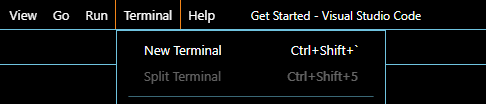

Create your first DApp

Time to test to make sure everything works, because I am a dummy and might have screwed it up
- open up Ubuntu to make a new project by creating a new folder with this command Copy Text
- change the directpry into the new project you just created Copy Text
- inside this folder we are going to create a prebuilt project for you using this command Copy Text
- To see where this new project is installed you can use this command Copy Text
- Now you will want to open up VScode and click the bottome left like the image shows
- select NEW WSL Window
- On the left you will go into the extension tabe and instakk WSL:Ubuntu if you have not done so in the past
- In VSCoder go to the terminal tab and select New Terminal 
- In that terminal you are go to post this commad to start DFX Copy Text
- Now you will need to open another terminal by click the plus button, or going to the tab up top again
- Once the new terminal is open you need to get inside the hello project by running this command Copy Text
- Now you can deploy you first project running this command in the terminal Copy Text
- Once that deploys run one last command Copy Text
- Congrats if all was succesfull, you launched your first DApp on your local network, oh you want to see it I guess. http://localhost:8080/
Create the Default Hello World DApp
mkdir testProject
cd testProject
dfx new hello
explorer.exe .

Time to Deploy the DApp to local Network
dfx start
cd testProject/hello
dfx deploy
npm start